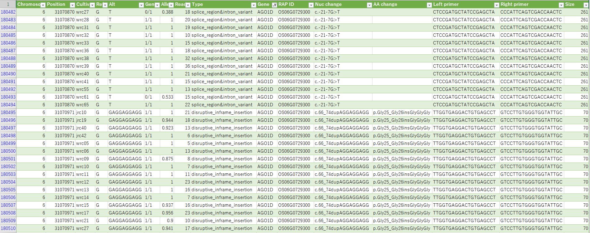
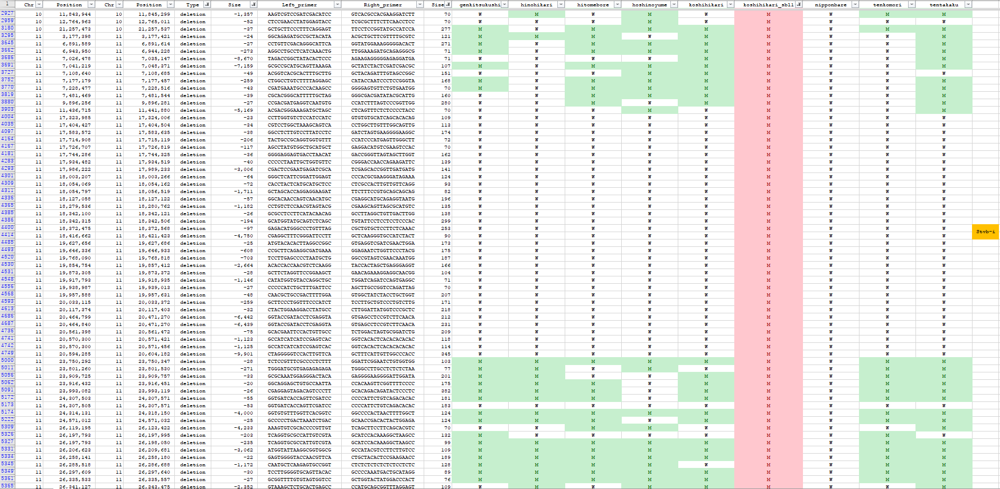

PEDを用いたイネの多型解析例
[日本語トップページへのリンク]
- 図をクリックすると説明にジャンプします。NEW

- イネのコアコレクションの多型一覧です。
- 変異を持っている系統との交配で変異を導入することができます。
|
- 図をクリックすると拡大されます。

- SNP以外に、挿入・欠失変異も正確に検出できる特徴があります。
- 変異部分を増幅するプライマー対の配列も得られます。
|
- 図をクリックすると説明にジャンプします。

- コシヒカリSBLが持つ、イネ縞葉枯れ病抵抗性遺伝子領域(Stvb-i)にある欠失変異の一覧です。
- コシヒカリSBL(赤)でのみ、対象領域に多型が検出されています。
- 変異部分を増幅するプライマー対の配列も得られます。
|
Ubuntuのインストール
PEDのセットアップと解析例
- 必要なソフトをダウンロードとインストールを行います。
$ sudo apt update
$ sudo apt upgrade
$ sudo apt install curl
$ sudo apt install git
$ sudo apt install sra-toolkit
$ git clone https://github.com/akiomiyao/ped.git
- Ubuntuのバージョンによっては、sra-toolkitのインストールに失敗することがあります。
また最近のバージョンのfastq-dumpは使用前にvdb-configコマンドで実行環境を設定する必要があります。
設定方法は、[fastq-dumpの設定]のページに記載しました。
- NCBIのSRAアーカイブからコシヒカリのfastq形式のファイル(DRR099981)をダウンロードします。
$ cd ped
$ git pull
$ perl download.pl accession=DRR099981
git pullで最新のスクリプトに更新されます。git pullは毎回行う必要はありませんが、プログラムが更新されている場合はpullしてください。
pedのディレクトリの中に、DRR099981の名称のディレクトリができて、その中のreadというディレクトリの中にfastqファイルがダウンロードされます。
アメリカからのダウンロードなので時間がかかります。
時々エラーが表示されますが自動的に再接続されるので、気長に待ちます。
同様の構造の任意の名前のディレクトリを作れば手持ちのデータの解析ができます。
- DRR099981の配列をイネの参照配列IRGSP1.0にマップして多型を検出します。
$ perl ped.pl target=DRR099981,ref=IRGSP1.0
イネの参照配列は設定済みなので自動的にダウンロードして解析用データを作成して一連の作業が自動的に進みます。
解析が無事終わるとDRR099981のディレクトリの中に、DRR099981.vcfという結果をまとめたファイルができます。
各座位に対してプライマーが作成可能な場合は、プライマーペアの配列データも出力されます。
Dockerでの解析
- Dockerを用いれば、必要な時に設定済み実行環境を取り込んで解析できます。
グーグルクラウド(GCP)やアマゾンウェブサービス(AWS)などのクラウドでの実行も可能です。
- Dockerのセットアップ
$ sudo apt install docker
$ sudo apt install docker.io
- 解析例
$ sudo docker pull akiomiyao/ped
$ sudo docker run -w /ped -v `pwd`:/work akiomiyao/ped perl download.pl accession=DRR099981,wd=/work
$ sudo docker run -w /ped -v `pwd`:/work akiomiyao/ped perl ped.pl target=DRR099981,ref=IRGSP1.0,wd=/work
上記のコマンドをコピーしてターミナルウインドウにペーストして実行してください。
IVGブラウザによる結果の確認
- Integrative Genomics Viewer (IVG) はBroad Instituteで作成されたゲノムブラウザです。
IGV Web Appが便利です。
IRGSP1.0.fasta
IRGSP1.0.fasta.faiをダウンロードします。
Genomesのプルダウンメニューより'Local File ...'を選んで、IRGSP1.0.fastaとIRGSP1.0.fasta.faiの両方を同時に選んでロードします。
transcripts.gffをダウンロードして、
Tracksのプルダウンメニューより'Local File ...'を選んでロードします。
DRR099981.vcfをダウンロードして、
Tracksのプルダウンメニューより'Local File ...'を選んでロードします。
個別の染色体を選んで拡大していくと多型が表示されます。
fastaの右端にある設定ボタンより、Three-frame Translateを選ぶとアミノ酸配列が表示されます。Reverseを選ぶと相補鎖側の配列が表示されます。
- デスクトップ版は、http://software.broadinstitute.org/software/igv/download からダウンロードできます。
IRGSP1.0.fastaをダウンロードします。
IVGを開いてGenomesのプルダウンメニューよりLoad Genome from Fileを選んで、IRGSP1.0.fastaを選んでロードします。
locus.gff
transcripts.gff
transcripts_exon.gff
をダウンロードして、メインの表示ボックスの下のサブのボックスにドラッグします。
DRR099981.vcf
をメインの表示ボックスにドラッグすれば、コシヒカリの多型データが取り込まれます。
各染色体の番号をクリックすると、染色体ごとの多型情報が表示されます。
興味のある部分をクリックすると、どんどん拡大されます。
多型をマウスで指すと詳細情報が表示されます。
多型の種類や多型頻度、また、プライマー対の配列情報と増幅産物のサイズも表示されます。
ページのトップの画像が表示例です。クリックすると大きくなります。
多型の部分を増幅するプライマー配列も表示されます。至適配列が見つからない部位では表示されません。
- 注意点 IVGでは長い欠失や転座の情報をうまく表示できない場合があるので、転座と80塩基以上の欠失に関しては、vcfファイルに出力しないように設定しています。
大きな構造変異を調べたい場合は、targetのディレクトリの中に出力された、svの拡張子のついたファイルを直接ご参照ください。
コシヒカリの遺伝的背景を持つ品種のNGS配列を比較してみました。
配列データはNCBI の SRA DRP004128より取得可能です。
$ cd ped
$ perl download.pl accession=DRR099981
のようにして、順に配列データをダウンロードします。
ダウンロード後、ディレクトリ名を
$ mv DRR099981 koshihikari
のように品種名に変えておくとわかりやすくなります。
$ perl ped.pl target=koshihikari,ref=IRGSP1.0
のようにして品種ごとに順に解析します。
次に、各品種の多型を整理した表を作ります。
$ perl compare.pl target=genkitsukushi:hinohikari:hitomebore:hoshinoyume:koshihikari:koshihikari_sbl1:nipponbare:tenkomori:tentakaku > snp.txt
$ perl compare.pl target=genkitsukushi:hinohikari:hitomebore:hoshinoyume:koshihikari:koshihikari_sbl1:nipponbare:tenkomori:tentakaku,type=sv > sv.txt
タブ区切りテキストファイルなので、エクセルで開くことができます。
構造変異のファイル(sv.txt)をエクセルにとりこんで、欠失に絞り込んで表示してみました。
1塩基、2塩基の欠失は体細胞変異の場合が多いので、19塩基までの欠失と100,000塩基以上の欠失、およびヘテロの欠失は除外しました。
クリックすると拡大図が表示されます。
コシヒカリSBL1はコシヒカリに縞葉枯れ病耐性の遺伝子を導入された品種ですが、コシヒカリSBL1の変異に絞り込んで(赤)表示させると、
第11染色体のStvb-i遺伝子(オレンジのあたり)の領域にコシヒカリSBL1特異的な欠失変異が存在することがわかります。
Stvb-i遺伝子については、
Hayano-Saito Y and Hayashi K (2020) Stvb-i, a Rice Gene Conferring Durable Resistance to Rice stripe virus, Protects Plant Growth From Heat Stress. Front. Plant Sci. 11:519.
をご覧ください。
PEDに関する資料
お問い合わせ
農研機構
宮尾安藝雄 (miyao@affrc.go.jp)